Jämförelse av förtidsröstning 2026 och 2022
Sidan är lösenordsskyddad.
Öppna verktyget
Läser in underlaget…
Jämförelse av förtidsröstning 2026 och 2022
Områdesnivå
Kluster
Kommun
Ingen
Mått
Förändring mot 2022
Röster per rb 2026 (%)
Röster per rb 2022 (%)
Färgskala
Vit-mörkgrön
Orange-lila
Rött-grönt
Extra lager
Valdeltagande 2022
Lokaler 2026 (vita stjärnor)
Lokaler 2022 (svarta punkter)
Urval
Endast lågt valdeltagande
Sök
Till och med dag
Klicka på ett område för detaljer. Scrolla för att zooma, dra för att flytta.
Utvecklingen dag för dag
Mottagna röster per dag
Kumulativt över perioden
Heldragen linje 2026, streckad 2022. Prickad linje är prognosen för resten av perioden.
Källa: Valmyndigheten, SCB. Bakgrundskarta © OpenStreetMap.